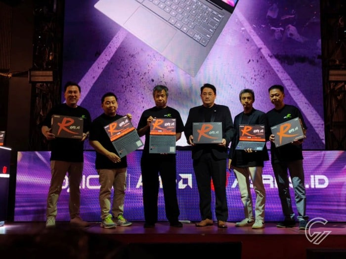
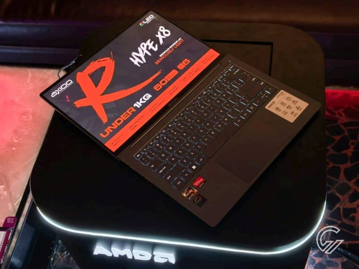

Axioo Hype R X8 OLED Dirilis di Indonesia, Inilah Harganya!
ditulis oleh Adhitya W. P.. pada 22 Oktober 2025
Untuk lebih menjangkau lebih banyak pengguna di Indonesia, PT Tera Data Indonesia Tbk atau Axioo secara resmi meluncurkan laptop terbarunya yang bernama Axioo Hype R X8 OLED.
Laptop yang satu ini akan tersedia di pasar Indonesia mulai Oktober 2025 dengan harga Rp8.999.000 melalui jaringan resmi Agres.ID dan channel online www.axiooworld.com. Nantinya pembeli akan mendapatkan dukungan Axioo Accidental Damage Protection Extra yang memberikan perlindungan menyeluruh dari kerusakan yang tidak terduga hingga kehilangan.
Sementara untuk mendukung kinerja multitasking yang lancar, RAM 16 GB berteknologi LPDDR5 telah disematkan dan penyimpanan internalnya pun dapat menampung banyak file seperti 500 film berkualitas HD atau 100.000 lagu MP3 berkat penggunaan NVMe SSD Gen 4 512 GB.
Dengan penggunaan prosesor AMD Ryzen 7 PRO 6850U (8-core 16-threads) yang dikombinasikan dengan GPU AMD Radeon 680M, Axioo Hype R X8 OLED mempunyai performa yang bertenaga untuk menjalankan beragam kebutuhan seperti mengetik, mengedit foto serta video, memainkan beberapa game, bermedia sosial, dan masih banyak lagi.
Untuk memberikan kenyamanan ketika penggunanya melakukan pekerjaan maupun menikmati hiburan, laptop ini sudah dibekali dengan layar 14 inci yang mempunyai teknologi OLED dan resolusi Full HD+ (1920 x 1200 piksel) yang dapat memperlihatkan konten secara terang dan jernih.
Menariknya laptop ini mempunyai engsel fleksibel yang membuat layar dapat diputar hingga 180 derajat sehingga lurus sejajar dengan keyboard. Sementara sistem operasi Windows 11 Original dibenamkan.
Berbekal baterai 60 WH, laptop yang satu ini diklaim mampu bertahan lama hingga 11 jam untuk pemakaian normal. Dengan bobotnya yang kurang 1 kg, laptop ini ringan ketika dipegang sehingga nyaman untuk dibawa kemanapun.
Perangkat ini menggunakan backlit keyboard yang dapat menyala sehingga memudahkan pengguna untuk mengetik atau bekerja pada kondisi redup maupun gelap. Selain itu, touchpad yang dihadirkan pun responsif terhadap sentuhan jari sehingga membuat pengguna nyaman ketika melakukan navigasi di layar laptop.
Untuk urusan konektivitas, Axioo Hype R X8 OLED ini sudah dilengkapi dengan WiFi, Bluetooth, port HDM 2.1, port USB 2.0 Type-C, port USB 3.2 Gen1 Type-A, port 3,5mm jack audio, dan 2 port USB 3.2 Gen1 Full Function Type-C (Data, Display, Charge).
Timmy Theopelus selaku Vice President of Business Development & Strategic Partnership PT Tera Data Indonusa Tbk mengungkapkan bahwa industri laptop terus bergerak ke arah perangkat yang ringkas, efisien, dan powerful. Melalui Hype R X8 OLED, Axioo ingin menunjukkan kemampuan brand nasional dalam menghadirkan produk berkelas global dengan performa serius dan desain yang menawan.
“Kolaborasi bersama AMD dan Agres.ID adalah langkah strategis untuk memperkuat ekosistem teknologi lokal yang mampu menjawab kebutuhan pasar modern,” imbuh Timmy Theopelus.
Sebagai tambahan, layanan purna jual Axioo sudah meluas di 183 jaringan layanan service center dan program perlindungan produk menyeluruh. Apalagi Axioo telah menyediakan layanan Drop and Pick di Indomaret sehingga membuat pengguna yang ingin memperbaiki laptop dapat melakukan pengiriman dan pengambilan barangnya di Indomaret terdekat.